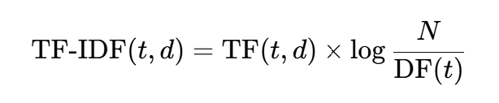
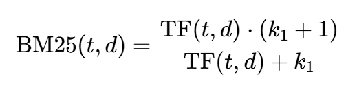
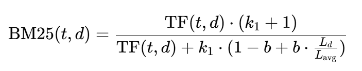

BM25 Algorithm for text retrieval
In today’s world, where information is abundant, text retrieval algorithms are crucial for filtering and ranking content based on relevance. Imagine searching for a document among thousands based on a few keywords—how does a search engine know which documents are most relevant? Two widely used methods, TF-IDF (Term Frequency-Inverse Document Frequency) and BM25 (Best Matching 25), provide answers to this question. Let's explore how TF-IDF works, why it has limitations, and how BM25 was designed to address these issues.
How Text Retrieval Works with TF-IDF
Before diving into TF-IDF, let’s first understand the basic principles of text retrieval. When you input a search query, the retrieval system tries to find documents containing your keywords and ranks them according to their relevance. The goal is to display documents most relevant to your query at the top.
TF-IDF is a fundamental scoring technique used in this process. Its purpose is to identify important words within a document and assign a higher weight to unique terms while down-weighting common terms. The TF-IDF score of a term in a document is calculated as follows:
- Term Frequency (TF): Counts how often a term appears in a document. A higher frequency means the term is more significant within the document.
- Inverse Document Frequency (IDF): This measures the rarity of a term across the document collection. The idea is to down-weight terms that appear in many documents, as they are less useful for distinguishing between documents. Common words like “the,” “is,” and “and” have low IDF values because they are present in nearly every document, while more unique terms have higher IDF values. The IDF score is calculated as the logarithm of the total number of documents divided by the number of documents containing the term. This helps to emphasize unique words while down-weighting terms that are common across the entire collection.
The formula for TF-IDF can be expressed as:

where t is the term, d is the document, N is the total number of documents, and DF(t) is the number of documents containing the term t.
TF-IDF provides a simple yet effective way to identify and weigh keywords in documents. However, it comes with limitations that can affect retrieval quality, especially in real-world applications.
Problems with Traditional TF-IDF
Despite its simplicity and effectiveness, TF-IDF has some notable issues:
-
Term Saturation Issue
TF-IDF assumes that term frequency contributes linearly to relevance, meaning that a term appearing 10 times is twice as relevant as one appearing 5 times. However, this isn’t always true; a point is reached where adding more occurrences of a term doesn’t significantly increase relevance. TF-IDF doesn’t account for this “saturation effect,” leading to overemphasis on frequently repeated terms. -
Document Length Bias
Longer documents are likely to contain more occurrences of search terms, simply because they have more content. TF-IDF tends to favor longer documents, even if they aren’t necessarily more relevant. This length bias means shorter, more focused documents may be ranked lower, even when they may be more relevant. -
Lack of Parameter Control
TF-IDF is relatively rigid, with limited customization for different types of documents or retrieval scenarios. The scoring is solely based on term frequency and inverse document frequency, with no additional parameters to adjust for nuances like document length or term importance saturation.
These limitations can cause TF-IDF to yield suboptimal results in real-world scenarios. This is where BM25, a more advanced probabilistic model, comes into play.
How BM25 Improves Text Retrieval
BM25, or Best Matching 25, was developed as part of the Okapi BM model family to address these very issues. BM25 is a scoring function that builds on TF-IDF but introduces additional controls, making it more flexible and effective in handling diverse document collections.
Here’s how BM25 addresses the limitations of TF-IDF:
1.Non-Linear Term Frequency Scaling
BM25 introduces a concept called term saturation, where the relevance score increases with term frequency but at a diminishing rate. In other words, if a term appears five times in a document, the relevance increase is substantial, but after a certain threshold, additional occurrences contribute less and less to the score. This prevents documents from being unfairly ranked higher solely because of excessively repeated terms. BM25 achieves this using the parameter k1, which controls the term frequency’s impact. The formula is:

Here, k1 can be adjusted based on the dataset to control how quickly the term frequency impact diminishes.
2.Document Length Normalization
Unlike TF-IDF, BM25 considers document length when calculating relevance. It uses a parameter b to normalize for length, ensuring that longer documents are not unfairly favored over shorter ones. This length normalization helps prevent long documents from automatically receiving higher scores and allows shorter, more focused documents to be fairly ranked.
The formula for BM25 length normalization is:

Here, L_d is the document length, and L_avg is the average document length across the collection. The parameter b (typically between 0 and 1) controls the degree of length normalization.
3.Tunable Parameters for Greater Flexibility
BM25’s parameters k1 (for term frequency scaling) and b (for length normalization) allow it to be customized for different types of datasets and retrieval needs. This tunability makes BM25 adaptable for various scenarios, from large document collections to shorter, focused datasets.
Why BM25 Is Superior for Modern Text Retrieval
BM25 has become the default scoring model in many search engines and information retrieval systems, including Elasticsearch and Apache Lucene, thanks to its practical enhancements over TF-IDF. By addressing the limitations of term saturation, document length bias, and lack of flexibility, BM25 produces more accurate and reliable rankings, making it highly effective for real-world applications.
The differences may seem subtle, but in high-stakes search scenarios, these optimizations make a big difference. BM25’s ability to fine-tune term impact and document length ensures users receive relevant results without the pitfalls that plagued TF-IDF.
Conclusion
While TF-IDF laid the groundwork for text retrieval, BM25 built upon it to solve key issues, enhancing search relevance and performance. Today, BM25 remains a go-to algorithm for ranking documents effectively, proving its enduring value in the field of Information Retrieval.